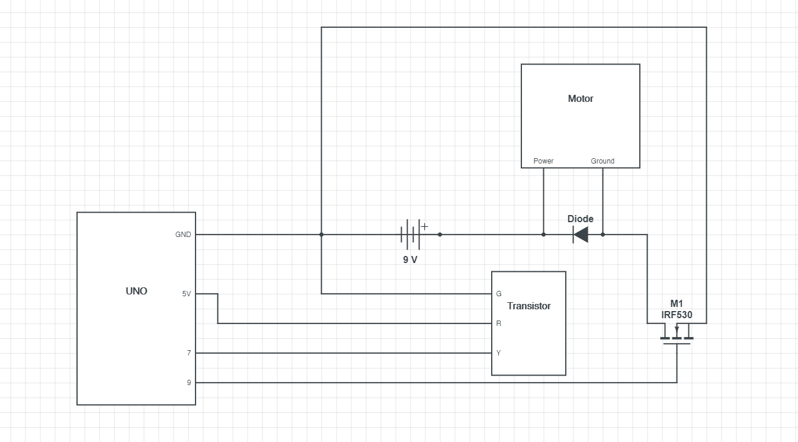
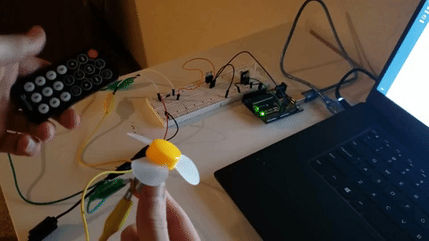

BACK
Assignment 4

This is the schematic for my circuit. I choose a to use a 220 Ohm resistor because the RED LED has a voltage drop of 1.8V, which is a lower voltage drop than the GREEN LED, and a desired amp of 0.02A. Given the equation, V=IR the optimal resistor is 160 Ohms. The closets resistor I have to that value is 220 Ohms.

This is my circuit. I am using a photoresistor to toggle on the GREEN and RED LED. When the photoresistor receives average room lighting, the GREEN LED receives the 5V. And when the photoresistor receives less than average room lighting (covered), the RED LED receives 5V.
//calling IR remote library
#include
//defining variable rate as 0
int rate = 0;
//defining variable RECV_PIN as 7
const int RECV_PIN = 7;
//creating an object for IR protocols and processing of the receiver
IRrecv irrecv(RECV_PIN);
//creating an object to decode information from the remote
decode_results results;
//defing variable fanPin as 9
const int fanPin = 9;
//setup function
void setup(){
//IR protocols and processes
irrecv.enableIRIn();
//IR protocols and processes
irrecv.blink13(true);
//defining pinMode
pinMode(fanPin, OUTPUT);
}
//loop function
void loop(){
//if statement checking if information is received
if (irrecv.decode(&results)){
//switch statement to hand IR code
switch(results.value){
//case 1 for IR input
case 0xFF30CF: //Keypad button "1"
//defining rate as 50
rate = 50;
}
//reset receiver
irrecv.resume();
}
//writes to motor the rate
analogWrite(fanPin, rate);
}
This is the code I used in Arduino to create this circuit. I used Serial to log the values of my photoresistor and LEDs. I used analogRead to read the photoresistor value. I used map and constraint to convert the photoresistor value to an LED value. And I used to analogWrite to write to each LED the desired value./p>

This is the gif of my circuit in operation. When I press the number one of the remote the fan turns on.
Code sourced from: http://www.circuitbasics.com/arduino-ir-remote-receiver-tutorial/